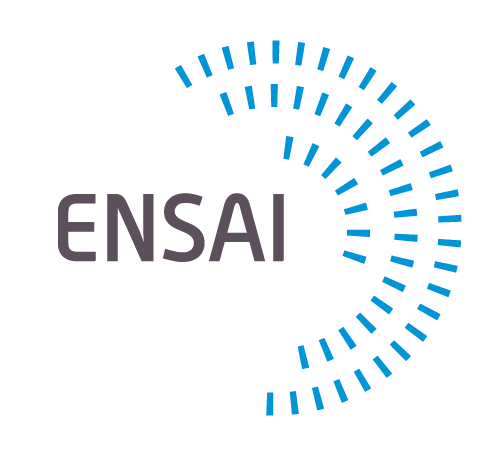

Étudiant ingénieur · Statistique & Data Science
2ᵉ année à l'ENSAI (Rennes), à la croisée de la statistique, de la donnée et de l'IA appliquée. Je recherche un stage en data pour 2027.
Représentation d'un graphe — clin d'œil aux algorithmes de clustering
Éducation
En préparation pour la 3e année du cycle ingénieur.
En parallèle de la 2e année du cycle ingénieur.

ENSAI - École Nationale de la Statistique et de l'Analyse de l'Information, RennesEn parallèle de la 1re année du cycle ingénieur.
Parcours
Junior-entreprise de l'école. En parallèle, conception d'un outil interne de génération d'avant-projets (voir projets ci-dessous).
Travaux
Application Streamlit pilotée par RAG (LangChain) sur l'API Gemini, avec sorties structurées via Pydantic, authentification Google OAuth et export Word automatisé avec docxtpl.
Projet de groupe ENSAI : ACP et classification hiérarchique (HCPC) pour dégager quatre profils d'élèves, en contrôlant l'origine sociale et le genre.
Application de traitement de données sportives dans le contexte de Paris 2024, restituée à l'oral sous forme de récit interactif.
Compétences
Contact